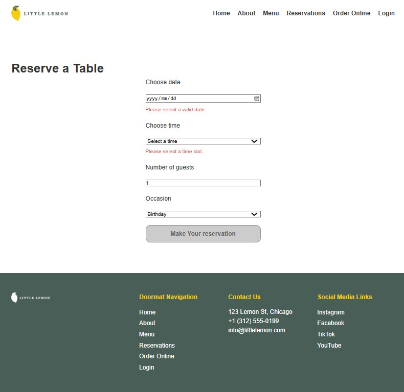

My Projects
My front-end engineering expertise is built on semantic markup. responsive UI design, component architecture, and automated testing. The below table outlines my core proficiency levels, key focus areas, and hands-on experience across essential modern web technologies-ranging from accessible HTML5 structure and custom CSS3 layouts to dynamic React application development and unit testing with Jest.
Project 1: Little Lemon Restaurant Application

A full-featured React web application built for a Mediterranean restaurant in Chicago. Features dynamic table reservation logic connected to an external API, state reducer hooks, and interactive client-side form validation.
Project 2: Form Validation Application

An accessible form architecture featuring custom error messaging ARIA live-region notifications, and 100% unit testing coverage using Jest and React Testing Library.
Project 3: Responsive Design System

A modular CSS grid and flexbox layout framework built for rapid prototyping, supporting full fluid responsiveness across mobile, tablet, and widescreen viewports.